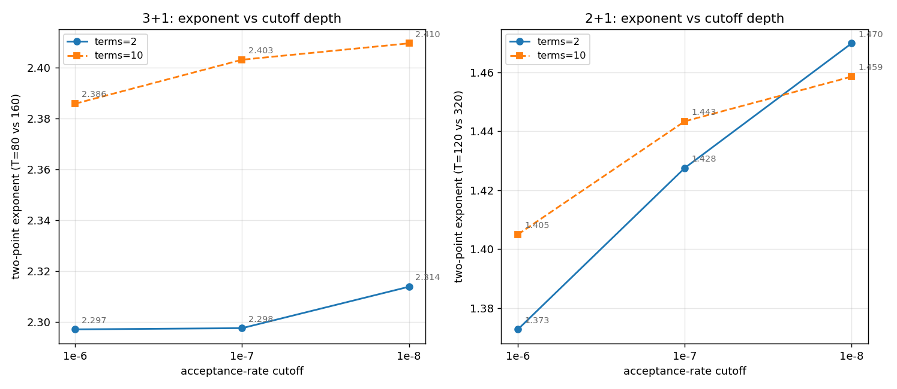

Decay ladders: how far from jammed is “jammed”, and which exponents survive depth
The multi-depth companion to yesterday's sweeps, and the first cutoff ladder run on an engine that honors its stop criterion exactly (the pre-07-06 accounting bias made older ladders effectively ~2× shallow). Three findings:

- No jamming plateau in sight. N grows a steady 10–16% per cutoff decade in every cell, with no curvature over the three decades — at 1e-8 the packings are still growing as a slow power law of attempts. Every absolute N in the project is a cutoff-conditional number; only exponents and ratios are portable.
- 3+1 exponents are depth-robust: terms = 2 moves 2.297 → 2.314 and terms = 10 moves 2.386 → 2.410 across two decades (≤ 0.02/decade, consistent with the old cutoff study). The terms gap persists at every depth — so within the smart ensemble the terms trend is a genuine sampler effect, not a convergence artifact (the uniform test, not depth, is what killed it).
- 2+1 exponents are strongly cutoff-limited: +0.05/decade (terms = 2: 1.373 → 1.470 from 1e-6 to 1e-8), and the terms gap closes and inverts by 1e-8. The historical 1.38 headline is a shallow-window value; 2+1 exponents must always be quoted with their cutoff, and any future 2+1 headline should come from a depth extrapolation, not a single cutoff.
Takeaway: the 3+1 exponent story (now re-anchored at the uniform D ≈ 2.23) rests on solid depth footing; the 2+1 story needs a deeper or extrapolated measurement before its uniform re-anchor is quoted. Chain bookkeeping: all nine campaigns (two sweeps, one uniform control, six decay arms) completed overnight on the five-worker fleet — mother, kitt, deep-thought, and a rented dual-4090 box that took every T = 160 e-8 job.